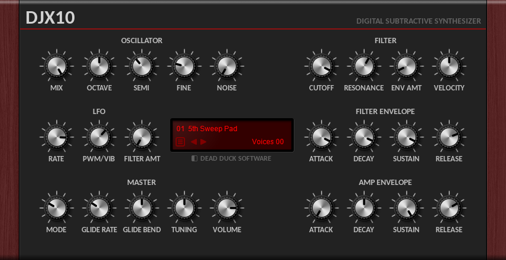

DJX10 Synthesizer¶
DJX10 is a subtractive synthesizer plugin in VST 2.4 format for Windows 32-bit and 64-bit hosts.
It is based on the mda JX10 synth and features 2 oscillators, a resonant low-pass filter and a variety of modulation and voicing options from mono to polyphonic playback with up to 32-voices.
The following sections describe the synthesizer controls available.
Oscillator¶
DJX10 has two sawtooth oscillators and provides the following controls:
Mix - set the level of second oscillator.
Octave - set the tuning of both oscillators in octaves.
Semi - set the tuning of the second oscillator in semitones.
Fine - set the tuning of second oscillator in cents
Noise - set the white noise mix level.
Both oscillators produce sawtooth waves unless the PWM/Vib control is set to PWM, in which case the two oscillators are phase-locked and will produce a square wave if set to the same pitch. Pitch modulation of one oscillator will cause pulse width modulation. Pitch modulation of both oscillators for vibrato is still available from the modulation wheel. In PWM mode the oscillators can still be detuned to give a wider range of PWM effects.
Filter¶
The resonant lowpass filter has the following controls:
Cutoff - set the filter cutoff frequency.
Resonance - set the filter resonance amount.
Env Amt - set the amount of cutoff modulation provided by the filter envelope.
Vel - set the amount of cutoff modulation provided by key velocity.
The velocity control determines the velocity sensitivity of the filter cutoff (-100 to +100) but also allows amplitude velocity sensitivity to be turned of; turn fully-left to disable velocity control of both cutoff and amplitude.
LFO¶
A sine-wave low frequency oscillator.
Rate - set the rate in Hz.
PWM/Vib - set the amount of pitch modulation for either for PWM or vibrato.
Filter Amt - set the amount of filter cutoff modulation.
Filter Envelope¶
Set the Attack, Decay, Sustain and Release amounts for the filter envelope.
Amp Envelope¶
Set the Attack, Decay, Sustain and Release amounts for the amplitude envelope.
Master¶
Mode - set the playback mode (see below).
Glide Rate - set the pitch glide rate.
Glide Bend - set the initial pitch-glide offset, for pitch-envelope effects.
Tuning - set the master tuning in cents.
Volume - set the master volume.
Playback mode has the following values:
Poly: 32-voice polyphonic.
P-Legato: 32-voice polyphonic with pitch glide if a key is held.
P-Glide: 32-voice polyphonic with pitch glide.
Mono: monophonic.
M-Legato: monophonic with pitch glide if a key is held.
M-Glide: monophonic with pitch glide.
Credits¶
DJX10 is based on code developed by mda and released under the MIT license, copyright © 1999-2008 by Paul Kellett. See the licensing files included in the Instrument Bundle for more details.